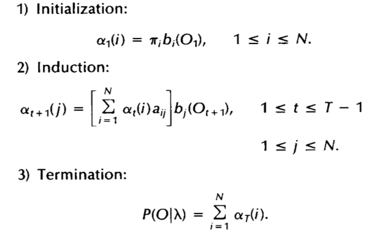

Project 3: Speech Recognition
Group members:
Adam Even “Bagels and Booze” Engel
Tim “Timothy-Tim-Ta-Roo” Duffy
Chris “Died for Tim’s Shins” Hall
Purpose:
Develop a Hidden Markov Model system capable of parsing a basic English sentence and comprehending its validity.
Implementation:
We utilized the Java programming language for this project using the Eclipse IDE. The final source code was developed by Tim Duffy in partnership with Adam Even Engel and Chris Hall. The program implements the classic Veterbi and Baum-Welch algorithms as well as the forward-backward algorithm.
Development:
To solve this problem, we identified three main point of functionality to implement:
1. Pattern Recognition: For each observation set, apply the ‘forward’ algorithm to
the set, and report the probability of the sequence
2. State Path Determination: For each observation set, apply the Viterbi algorithm
to determine the optimal state path and its probability
3. Model Optimization: For each observation set, apply the Baum-Welch algorithm to
produce an HMM which is optimized to produce the maximum
likelihood of the given sequence
Development of this project started with parsing in the HMM file given by the user. We then created a State variable, which is a custom made class. Each instance of a ‘State’ class holds its name, its initial (pi) probability, the probabilities of transitioning from the state to each of the other states, and the probability of observing each vocabulary word while in that state. Using this representation of the HMM, we were able to implement the necessary algorithms quite easily.
For state recognition, we implemented the ‘forward’ part of the forward-backward process to calculate P(O | ⅄), or the probability of observing the sequence O, given a certain HMM. The calculation of forward probabilities is:

To determine the path of states that results in the highest observation probability, we used the Veterbi algorithm. The calculation of the optimal path (and its probability) is as follows:
Finally, we used the Baum-Welch algorithm to create an HMM which maximizes the probability of observing a given observation set. We calculated new transition and observation probabilities for each state based on this formula. For more information, click here: http://www.cs.bu.edu/fac/betke/cs440/restricted/papers/rabiner.pdf
Questions:
For the current application, why does this probability seem lower than we expect? What does this probability tell you? Does the current HMM always give a reasonable answer? For instance, what is the output probability for the below sentence?
The probability seems lower because two of the three are actually valid sentences. The calculated probabilities represent the likelihood that a given string of words is a valid sentence. “Kids play chess” and “Robots eat food” could both be observed in real-world English usage, so their observation probability should be much higher. Having such a low probability suggests multiple things. It may not look at the subject as the initial state, or we may simply be working with a poorly-designed model. The example sentences yield the following output:
Robots do kids play chess: 0.001512
Chess eat play kids: 0.0
The first string is actually a valid sentence - “Robots, do kids play chess?” However, it gives an extremely low probability, indicating that the HMM is not particularly strong (or creative). The second sentence rightfully has a probability of 0 because it’s just a collection of words that hold no meaning.
What can we tell from the reported optimal path for syntax analysis purpose? Can the HMM always correctly distinguish "statement" from "question" sentence? Why?
The best thing we can tell from the syntax analysis is what the model assumes the string says. From analyzing the supplied files, it does a fairly good job picking up which word is associated with which part of speech. Using the previous question’s first example sentence, however, yields a very low probability for one specific reason: the model cannot properly recognize questions. Statements and questions have different structures. What works for one does not work for the other. Therefore, the HMM reads “Robots do kids play chess” as a nonsensical sentence rather than “Robots, do kids play chess?” as a valid question. However, “Robots, do kids want to play chess in my butthole?” is also a valid question, given a larger vocabulary.
Why should you not try to optimize an HMM with zero observation probability?
When the HMM has a zero observation probability, optimization is moot. Due the the zero observation probability, the system does not know enough to optimize it. If an optimization occurred and changed it to a non-zero probability, unfounded and unsupported results could occur.
What kinds of changes will you need to make in the above HMM?
If we wanted to add new states such as “PRESENT TENSE” or “ADVERB”, we would have to expand the A matrix to show the transition probabilities to and from these new states. We would also have to add to the B matrix, the probability of observing each of the vocabulary words while in these new states. Finally, we would need to expand the pi matrix to include the probabilities of beginning in each state.
In order to add 2 more syntax structures, would require an increase of 2 rows and 2 columns on the a and b matrices, and two values added to the pi array. An example of the updated a,b, and pi may look as follows:
a:
0.0 0.4 0.6 0.0 0.0 0.0
0.7 0.0 0.3 0.0 0.0 0.0
0.0 0.0 0.0 0.4 0.5 0.1
0.0 0.0 0.0 0.6 0.3 0.1
0.3 0.0 0.7 0.0 0.0 0.0
0.0 0.0 0.0 0.2 0.8 0.0
b:
0.5 0.4 0.0 0.0 0.0 0.0 0.05 0.05
0.0 0.0 0.5 0.5 0.0 0.0 0.0 0.0
0.0 0.0 0.0 0.0 0.5 0.5 0.0 0.0
0.1 0.2 0.0 0.0 0.0 0.0 0.3 0.4
0.0 0.0 0.0 0.1 0.2 0.0 0.7 0.0
0.0 0.0 0.0 0.0 0.6 0.2 0.0 0.2
pi:
0.3 0.3 0.1 0.0 0.2 0.1
Conclusion:
In this project, we implemented a very simple natural language processor capable of determining the validity of a string of words in English. It was limited to a fairly short corpus of words. Though it could ably parse the sentences, it could not recognize the difference in syntax between a statement and a question. In short, the hidden Markov model we built was quite limited in scope. To expand, we would need to refine the algorithm to recognize different structures and add states. We would also want to create a larger corpus and maybe allow the program to add to the corpus itself by interpolating part of speech from surrounding words.